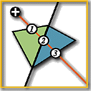 Triangle-based View Interpolation Without Depth-Buffering
, and ,
Journal of Graphics Tools, Vol. 3, No. 4, 1998, pp. 13-31.
Abstract
- In this paper, we propose a triangle-based image warping algorithm which can correctly resolve the visibility problem without depth-buffering. The algorithm is especially useful when depth information is not available, such as in the case of real-world photographs. By subdividing the reference image into variable-sized triangles, image warping can be done efficiently using existing graphics hardware. We derive the drawing order between each pair of neighboring triangles from the epipolar geometry. Using this drawing order,a graph can be built and topological sorting is applied on the graph to obtain the complete drawing order of all triangles in linear time.
Download Paper
- Acrobat: triorder.pdf (4.92 MB)
Some Warping Results
The following table shows some result and ordering of warping a perspective image of Beethoven.
Pixel-based Warping Triangle-based Warping 2D Ordering 2D Wireframe 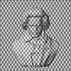 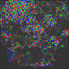 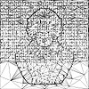 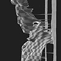 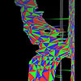 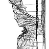 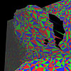 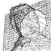 Walkthrough the Perspective Images
Three animations are available for download. All movies show the walkthrough of the original 2D perspective images. They demonstrate the correctness of the image-based visibiltiy sorting proposed for warping triangles in the paper.
In each movie, the left half shows the warping result while the right half shows the ordering of the triangles. The darker the color of the triangle is, the earlier the drawing order of the triangle is.
Attic Beethoven City 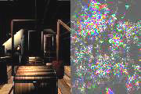 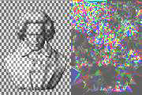 Related Publications
{kind=link}
{kind=link}
{kind=link}
{kind=link}
{kind=link}
{kind=link}
{kind=link}
{kind=link}
{kind=link}
{kind=link}
{kind=link}
{kind=link}